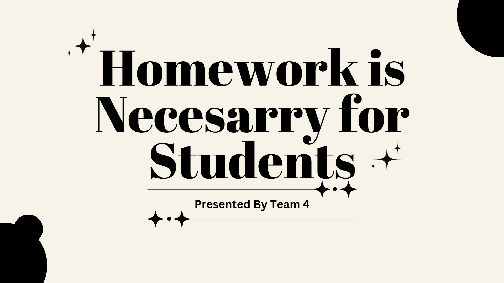

Copyright 2019 Reflux Design
About Me
Nama saya Kezia Ronauli Hutagaol, namun saya biasanya dipanggil Key. Saya berusia 16 tahun, dan saya tinggal di Villa Mutiara Serpong.Tentang Hobi Saya
Saya menyukai menggambar karena saya suka membuat sebuah karakter. Saya memiliki messy artstyle, sehingga kadang orang melihat gambar saya acak-acakan (foto disamping adalah collab gambar).
Project Agama
Saya belajar agama setiap pulang sekolah di hari Jumat. Setiap minggu selalu ada materi baru yang berhubungan dengan materi di minggu sebelumnya. Saat pelajaran akan berakhir, guru kami Pak Hery Simatupang akan memilih salah satu siswa untuk membuat kesimpulan pelajaran hari tsb. Berikut adalah materi selama 4 minggu terakhir.Lahir Baru
Kami belajar tentang lahir baru, yang berarti berbalik dari hidup dalam dosa menjadi hidup kekal didalamNya. Kami mempelajari ini pada 31/07/26.
Yesus Sebagai Tuhan Hidup Kita
Kelanjutan dari materi kemarin, pada 07/08/26, untuk menerima Yesus dalam hidup kita setelah kita lahir baru didalamNya.
Visi & Panggilan Allah
Pada tanggal 14/08/26, kita dipanggil untuk melayani Kerajaan Allah di dunia ini setelah kita menerima Yesus.
Obesitas Rohani
Pembelajaran ini mengenai seringkali kita sebagai manusia hanya bersikap rohani di dalam ibadah saja, namun saat itu kami diajarkan untuk mengubahnya.
Project B. Inggris
Dalam pelajaran Bahasa Inggris, saya telah mempelajari tentang Analytical Exposition Text. Teks Analytical Exposition sendiri memiliki pengertian berupa jenis teks bahasa Inggris yang berisi pendapat atau pandangan logis penulis mengenai suatu fenomena, isu, atau topik hangat di sekitarnya. Guru B. Inggris saya adalah Miss Endang.Proyek B. Inggris Saya
Selama saya belajar B. Inggris di kelas 11 ini, saya telah melakukan hal seperti memperkenalkan diri dalam B. Inggris, membuat kesimpulan dari suatu tugas, dan presentasi dengan B. Inggris beserta mencari kata penghubung, passive voice, stating opinion, hingga menerjemahkan teks presentasi kita ke dalam B. Indonesia.

Project B. Jerman
Moin-moin! Ya itu adalah ucapan salam yang saya suka dari pelajaran Deutch atau B. Jerman. Guru yang mengajari Deutch adalah Frau Faras. Selain salam, saya telah mempelajari beberapa hal lagi diantaranya:Ucapan Salam Lainnya
Ucapan salam sendiri terbagi 2, salam formal dan nonformal. Moin-moin adalah contoh salam non formal. Contoh salam formal seperti Guten Morgen/Tag.
Perkenalan Diri Dalam Deutch
Perkenalan diri dalam B. Inggris mungkin sudah biasa, dan rasanya agak menantang perkenalan diri dalam Deutch. Tidak mudah untukku namun itu hal baru yang unik.
Alfabet yang Berbeda
26 alfabet umum masih ada dalam Deutch, namun beberapa penyebutannya seperti tertukar jika dibandingkan B. Indo. Ada alfabet baru yaitu Ä, Ü, Ö, ß.
Bahasa Sehari-hari
Terakhir, kami juga diajari beberapa bahasa untuk penggunaan sehari-hari, seperti Danke (terimakasih), Tschüss (dadah), dan masih banyak lagi.